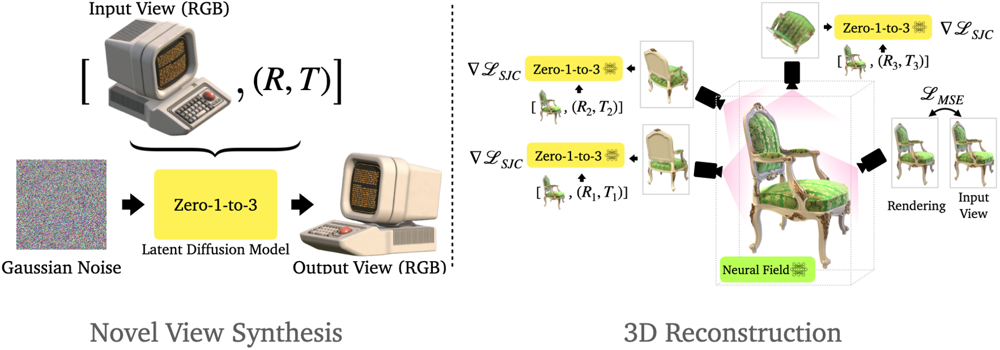

Information
Title: One-2-3-45: Any Single Image to 3D Mesh in 45 Seconds without Per-Shape Optimization
Reference
Project: https://one-2-3-45.github.io/
Code: One-2-3-45/One-2-3-45
Author: Jeonghwa Yoo
Last updated on Jan. 15, 2025
One-2-3-45#
Abstract#
Task: 단일 이미지 → 3D 복원
단일 이미지 3D 복원 문제
자연 세계에 대한 깊은 지식을 요구하는 중요한 동시에 도전적인 과제.
기존 방법들은 2D 디퓨전 모델을 이용한 neural radiance field 최적화를 통해 문제를 해결하지만, 최적화 시간 증가, 3D 일관성 부족, 형상 품질 저하 등의 문제점이 있음.
제안 방법
단일 이미지 입력: 객체의 단일 이미지를 입력으로 받아 360도 3D 텍스처 메쉬를 생성.
다중 뷰 이미지를 생성한 후 (Zero123) 이용 이를 3D 공간으로 lifting하는 것을 목표로 함
View-conditioned 디퓨전 모델 사용: Zero123 모델을 활용하여 입력 이미지로부터 다중 뷰 이미지를 생성
3D 복원 모듈:
다중 뷰 불일치 문제를 해결하기 위해, SDF-based generalizable neural surface reconstruction method을 사용.
360도 메쉬 복원을 가능하게 하는 중요한 학습 전략을 제안.
장점
고비용 최적화를 필요로 하지 않아 기존 방법보다 짧은 시간에 3D 형태를 복원.
3D 일관성을 높이고 입력 이미지에 더 충실한 결과 생성.
평가 결과
합성 데이터와 실제 이미지에서 테스트하여, 메쉬 품질과 실행 시간 측면에서 우수성을 입증.
추가 활용 가능성
텍스트-이미지 디퓨전 모델과 결합하여 텍스트-3D(Text-to-3D) 작업도 지원 가능.
{kind=link}
Fig. 831 단일 이미지를 입력으로 받아 360도 메쉬를 45초 만에 재구성#
참고 자료: Sign distance function

Fig. 832 Sign Distance Function 예시#
각 점이 표면에서 얼마나 멀리 떨어져 있는지를 거리로 표현
양수: 표면 바깥
음수: 표면 안쪽
Introduction#
단일 이미지 3D 복원의 중요성과 어려운 점
단일 2D 이미지로부터 3D 객체 모델을 복원하는 문제는 로봇 조작, 내비게이션, 3D 콘텐츠 제작, AR/VR 등에서 중요한 역할을 함.
보이는 부분뿐만 아니라 보이지 않는 부분을 추정해야 하며, 이는 정보 부족으로 다수의 가능성 있는 솔루션을 포함한 ill-posed 문제임.
3D shape dataset을 이용한 기존 방법과 제안 접근법 비교
3D shape dataset을 이용한 기존 방법의 한계
3D shape dataset을 통해 클래스 특화 사전 정보(Class-specific Priors)를 이용하지만, 새로운 카테고리에 대한 일반화가 어려움.
공개된 3D 데이터셋 크기가 제한되어 있어 복원 품질의 한계가 존재.
제안 접근법
범용 솔루션: 입력 이미지의 객체 카테고리와 상관없이 고품질 3D 텍스처 메쉬를 생성.
2D 디퓨전 모델의 강력한 사전 정보를 활용하여 3D 복원을 수행.
Zero123 모델을 사용하여 입력 이미지의 카메라 변환에 따른 다중 뷰 이미지를 생성.
기존 최적화 기반 방법들과 제안 접근법 비교
기존 최적화 기반 방법들의 문제점
시간 소모적: 최적화 과정에서 다수의 iteration 필요.
메모리 집약적: 고해상도 이미지 렌더링 시 메모리 부담 증가.
3D 일관성 부족: 단일 뷰 기반 작업으로 인해 모순된 3D 형상이 생성될 가능성(Janus 문제).
형상 품질 저하: density field 기반 방법은 고품질 RGB 렌더링은 가능하지만, 고품질 메쉬 추출은 어려움.
제안 방법의 특징
최적화 기반 접근 대신, 코스트 볼륨 기반(cost-volume-based) 3D 복원 기법을 결합.
SparseNeuS(MVSNeRF 변형)를 기반으로 하여 다중 뷰 예측의 불일치 문제를 해결.
입력 이미지의 카메라 포즈가 미지수인 문제를 해결하기 위해 고도 추정 모듈(elevation estimation module)을 제안.
구성 모듈
다중 뷰 생성: Zero123 모델로 다중 뷰 이미지 생성.
고도 추정 모듈(elevation estimation module): Zero123의 좌표계에서 입력 형태의 고도를 계산하여 카메라 포즈 결정.
3D 복원: 다중 뷰 예측 및 카메라 조건을 바탕으로 고품질 360도 메쉬 복원.
제안한 방법의 강점
시간 효율성: 최적화 없이 45초 내외로 3D 메쉬 생성.
형상 품질 개선: SDF 표현을 활용하여 더 나은 지오메트리와 일관된 3D 메쉬 생성.
입력 이미지 충실도: 기존 방법보다 입력 이미지에 더 충실한 복원 결과.
평가 결과
합성 데이터와 실제 이미지에서 테스트하여 품질과 효율성 측면에서 기존 방법보다 우수함을 입증.
Method#
3.1 Zero123: View-Conditioned 2D Diffusion → 다중 뷰 이미지 생성
3.2 Can NeRF Optimization Lift Multi-View Predictions to 3D? → 기존 NeRF 기반 및 SDF 기반 방법의 한계점 (일관되지 않은 다중 뷰 예측으로 인해 고품질 메시를 재구성하지 못함)
3.3 Neural Surface Reconstruction from Imperfect Multi-View Predictions → 일관적이지 않은 다중 뷰 예측을 처리하고 3D 메시를 재구성 할 수 있는 모듈 제안
3.4 Camera Pose Estimation → 3D 재구성을 위한 Zero123의 포즈 추정의 필요성 및 입력 뷰의 고도를 추정하는 새로운 모듈 제안
3.1 Zero123: View-Conditioned 2D Diffusion#
Fig. 833 모델 구조#
2D 확산 모델의 강점:
DALL-E, Imagen, Stable Diffusion과 같은 최신 2D 확산 모델은 인터넷 규모 데이터를 학습해 강력한 시각적 개념과 사전 지식을 보유.
기존에는 주로 text-to-image에 초점을 맞췄지만, 최근 연구는 모델을 fine-tuning하여 다양한 조건부 제어 기능 추가 가능성을 보여줌.
Canny edges, 사용자 낙서(user scribbles), 깊이(depth), 노멀 맵(normal maps)과 같은 조건들이 효과적임이 입증됨.
Zero123
 Fig. 834 Zero-1-2-3#
목표
Stable Diffusion 모델에 뷰포인트 조건(viewpoint condition)을 추가하는 것이 목표.
주어진 단일 RGB 이미지와 상대적인 카메라 변환 정보를 통해 변환된 뷰에서 새 이미지를 합성 → novel view synthesis
데이터세트 및 학습 방법:
대규모 3D 데이터세트에서 생성된 이미지 쌍과 상대적 카메라 변환 정보를 사용해 Stable Diffusion 모델을 파인 튜닝.
학습 시 객체는 좌표계의 원점에 배치되고, 구면 카메라는 구 표면에 위치하며 항상 원점을 바라봄.
카메라 변환 매개변수화:
두 카메라 위치 (θ₁, ϕ₁, r₁)와 (θ₂, ϕ₂, r₂) 간의 상대적 카메라 변환을 (θ₂ − θ₁, ϕ₂ − ϕ₁, r₂ − r₁)로 표현.
학습 목표: 모델 f가 f(x1, θ2−θ1, ϕ2−ϕ1, r2−r1)를 x2와 유사하게 만드는 것 (x1, x2는 객체의 서로 다른 뷰에서 촬영된 이미지)
성과:
Stable Diffusion 모델이 학습 데이터세트에 없는 객체들에 대해서도 카메라 뷰포인트를 제어하는 일반적인 메커니즘을 학습할 수 있음을 발견.
3.2 Can NeRF Optimization Lift Multi-View Predictions to 3D?#
Zero123을 사용하여 주어진 객체의 단일 이미지를 기반으로 다중 뷰 이미지를 생성.
여기서, 기존의 NeRF 기반 또는 SDF 기반 방법으로 이 다중 뷰 이미지를 사용해 고품질 3D 메시를 복원할 수 있는지 검증하기 위해 실험 수행.
실험 설계
단일 이미지를 입력으로 받아 Zero123을 통해 구 표면에서 균일하게 샘플링된 카메라 자세를 사용해 32개의 다중 뷰 이미지를 생성.
생성된 다중 뷰 이미지를 각각 NeRF 기반 TensoRF와 SDF 기반 NeuS에 입력.
TensoRF: density 필드 최적화.
NeuS: signed distance function 필드 최적화.
결과물의 품질 분석
실험 결과
Fig. 835 Reconstruction 결과#
두 방법 모두 만족스러운 결과를 생성하지 못함
수많은 왜곡과 floaters가 발생.
Floaters: 메인 메쉬와 연결되지 않은 별도의 조각들
이러한 성능 저하의 주된 원인은 Zero123의 예측 간 비일관성(inconsistency) 때문.
Zero123 예측의 한계
Zero123의 예측 결과와 실제 렌더링을 비교:
Fig. 836 예측 결과와 실제 렌더링 비교 그래프#
PSNR(픽셀 단위 유사도): 전체적으로 낮음. 특히 입력 카메라 pose와 목표 카메라 pose의 상대적 변화가 크거나, target pose가 하단(bottom) 또는 상단(top)처럼 일반적이지 않은 위치일 경우 더욱 저하.
Mask IoU(영역 일치도): 대부분 0.95 이상으로 높음.
CLIP 유사도: 상대적으로 양호.
→ Zero123은 전반적으로 실제 결과와 유사한 윤곽과 경계를 가진 예측을 생성하지만, 픽셀 단위 외관은 정확히 일치하지 않음.
기존 최적화 기반 방법의 한계
소스 뷰 간의 이러한 미세한 비일관성은 전통적인 최적화 기반 방법에 치명적.
원본 Zero123 논문에서 다중 뷰 예측을 3D로 변환하는 또 다른 방법을 제안했으나, 실험 결과 이 역시 완벽한 결과를 제공하지 못하며 최적화에 시간이 오래 걸림
3.3 Neural Surface Reconstruction from Imperfect Multi-View Predictions#
최적화 기반 방법 대신, 본 연구는 SparseNeuS에 기반한 일반화 가능한 SDF 재구성 방식을 채택.
SparseNeuS는 MVSNeRF 파이프라인의 변형으로, 다중 뷰 스테레오, neural scene representation, 볼륨 렌더링(volume rendering)을 결합.
해당 모듈은 소스 이미지와 대응하는 카메라 pose를 입력으로 받아 단일 feed-forward 패스로 텍스처 메시를 생성.
복원 관련 네트워크 파이프라인
Fig. 837 복원 네트워크 파이프라인#
입력 및 2D feature 추출
m개의 카메라 pose와 주어진 소스 이미지를 입력.2D feature 네트워크를 사용해
m개의 2D feature map 추출.
3D cost volume 생성
각 3D 복셀을
m개의 2D feature plane으로 투영.투영된 2D 위치에서의 특징 값들의 분산을 계산해 cost volume 생성.
Cost volume construction
Cost volume: 특정 깊이에서 3D 점의 일치성을 표현하는 3차원 매트릭스
생성 과정
Bounding box 설정: 관심 있는 영역을 포함하는 바운딩 박스(카메라 파라미터를 이용하여 모든 이미지를 포괄하는 3D 공간 영역 정의) 를 설정하고 이를 고정된 3D 복셀 그리드로 분할
Feature Projection
입력 이미지에서 2D feature map을 추출하고 3D 공간의 각 복셀을 해당 이미지의 픽셀로 투영 (카메라 파라미터 이용)
이 때 투영된 feature들은 보간을 통해 정확하게 계산됨
동일한 voxel 위치에서 여러 이미지 view에서 투영된 feature들의 variance를 계산하여 cost volume 생성
분산이 높을수록 이미지간 불일치가 큰 것
Geometry volume 생성
Sparse 3D CNN을 사용해 cost volume을 처리하여 입력 shape 기하학적 정보를 인코딩하는 볼륨 생성.
SDF 및 색상 예측
SDF 값 예측 (첫번째 MLP 네트워크):
입력
3D 좌표
geometry volume feature
출력: SDF 값
색상 예측 (두번째 MLP 네트워크):
입력
투영된 위치의 2D feature
geometry volume feature
쿼리 viewing direction과 소스 이미지의 시점 간 상대적 방향.
네트워크는 각 소스 뷰에 대한 blending weight를 예측하고, 해당 3D 점의 색상은 투영된 색상의 가중합(weighted sum)으로 계산.
렌더링
SDF 기반 렌더링 기법을 활용해 RGB 및 depth 렌더링 수행
2-Stage Source View Selection and Groundtruth-Prediction Mixed Training
기존 sparseNeuS는 정면 reconstruction만 가능
본 논문에서는 360도 메쉬 복원을 위해 sparseNeuS를 확장
특정 방식의 소스 뷰 선택 및 깊이 정보 추가
Zero123을 활용하여 새로운 데이터 처리
데이터셋과 카메라 모델
Zero123은 freeze 시킨 채 3D 객체 데이터셋에 대해 학습.
Zero123의 훈련 방식(정규화된 shape, 구면 카메라 모델)을 따름.
2-stage source view selection
1 stage: 구면 위의 균일하게 배치된 n개의 카메라 포즈에서 RGB와 depth ground truth 이미지 렌더링
2 stage: Zero123 예측
각 Ground-Truth 뷰에서 4개의 인접 뷰를 Zero123으로 예측. → 인접 뷰를 사용하기에 zero123의 결과가 정확하고 일관적임
Groundtruth-prediction mixed training
4 × n개의 예측과 실제 카메라 pose를 reconstruction 모듈에 입력n개의 실제 RGB 이미지 중 하나를 랜덤으로 타겟 뷰로 선택
Ground truth RGB와 depth 값을 사용해 학습 → depth loss로 더욱 정밀한 복원 가능
Inference 시에는 ground truth를 zero123의 예측으로 대체하고 depth는 필요 없음
텍스처 메시 생성
Marching Cubes 알고리즘을 이용해 예측된 SDF 필드에서 메시를 추출
메시의 vertex 색상은 NeuS에서 사용한 방법을 이용해서 쿼리
본 모듈은 3D 데이터셋에서 학습되었지만, 로컬 상관관계를 학습했기 때문에 unseen shapes에도 일반화 가능함을 확인.
3.4 Camera Pose Estimation#
카메라 파라미터화 및 제약사항
Zero123은 카메라를 구면 좌표계 (θ, ϕ, r)로 표현
θ: 고도각(Elevation).ϕ: 방위각(Azimuth).r: 반지름(Radius).
방위각
ϕ와 반지름r은 임의로 조정 가능하며, 이는 결과적으로 복원 객체의 회전 및 스케일 변화를 유발.그러나 절대 고도각(θ) 정보가 하나는 반드시 필요
기준 카메라(예:
$(θ_0, ϕ_0, r_0)$)의 고도각이 있어야 다른 카메라와의 상대적인 포즈(∆θ, ∆ϕ)를 표준 XYZ 프레임에서 정확히 계산 가능.동일한
∆θ와∆ϕ일지라도, 기준 고도각(\(θ_0\))에 따라 상대 포즈가 달라짐:모든 이미지의 고도각을 조정하면 복원 형태가 왜곡됨(예: 전체 고도각을 30도 상하로 이동할 경우).
참고: 구면 좌표계
Fig. 838 구면 좌표계#
구면 좌표계에서 XYZ 좌표계로의 변환
\[\begin{split} x=r⋅cos(θ)⋅cos(ϕ)\\ y=r⋅cos(θ)⋅sin(ϕ)\\ z=r⋅sin(θ) \end{split}\]상대적 변화량이 기준 고도각에 따라 달라짐
\(θ_0\)이 0\(^\circ\)일 때의 \(Δθ=30^\circ\)의 결과와 \(θ_0\)이 60\(^\circ\)일 때의 \(Δθ=30^\circ\)의 결과는 다름
\(θ_0\)이 60\(^\circ\)일 때의 \(Δθ=30^\circ\)은 더 큰 이동을 초래함
Elevation Estimation Module
고도각 왜곡 문제를 해결하기 위해 Elevation Estimation Module을 도입:
Zero123을 사용해 입력 이미지로부터 4개의 근접 뷰를 예측.
모든 가능한 고도각 후보를 coarse-to-fine 방식으로 열거.
각 고도각 후보에 대해:
4개의 이미지에 대응하는 카메라 포즈 계산.
이미지와 카메라 포즈 간 Reprojection Error를 계산하여 후보 고도각의 정확성 평가
Reprojection Error가 가장 작은 고도각을 최종적으로 선택.
최종 카메라 포즈 생성
선택된 고도각을 기반으로 입력 이미지의 포즈와 상대 포즈를 결합하여 4 × n 소스 뷰의 카메라 포즈를 생성.
왜곡 방지 및 세부사항 제공
고도각 추정 과정을 통해 복원 객체의 왜곡을 방지.
4. Experiments#
4.1 Implementation Details#
입력 이미지당 소스 뷰 이미지 생성
n = 8: 입력 이미지에 대해 구면 표면에 균일하게 배치된 카메라 포즈를 선택하여 8개의 뷰 생성.
각 8개의 뷰에 대해 10° 간격의 로컬 이미지 4개 추가 생성.
총 32개의 소스 뷰 이미지가 재구성을 위해 사용됨.
학습 환경
Zero123 모델은 freeze
Reconstruction 모듈 학습 데이터셋: Objaverse-LVIS
총 46,000개의 3D 모델 포함.
1,156개 카테고리로 구성된 대규모 3D 객체 데이터셋.
렌더링 도구
BlenderProc : 학습 데이터로 사용할 RGB 및 depth 이미지의 ground truth 생성.
배경 제거: 배경이 포함된 이미지의 경우, SAM(Segment Anything Model) 을 사용하여 배경 제거 수행.
4.2 Single Image to 3D Mesh#
Qualitative examples
Fig. 839 Qualitative examples*#
그림 1과 5에서 합성 이미지 및 실제 이미지에 대한 효과적인 처리 방법을 보여줌.
다른 single image to 3d reconstruction 방법들과의 정성적 비교
Fig. 840 다른 방법들과 정성적 비교#
대부분의 방법들이 단일 이미지에서 그럴듯한 3D 메시를 생성하지만, 기하학적 품질, 입력 이미지와의 일치도, 3D 일관성에서 차이가 있음.
기하학적 품질
RealFusion 과 3DFuse는 neural radiance field를 최적화하나, 고품질 메시 추출에 어려움이 있음.
Point-E는 희박한 포인트 클라우드를 생성하여 메시에 구멍이 많이 생김.
본 논문의 방법은 SDF표현을 사용하여 더 나은 기하학적 품질을 제공.
입력 이미지와의 일치도:
대부분의 베이스라인 방법들이 입력 이미지와의 유사성 유지에 어려움을 겪음.
Shap-E는 다소 나은 성능을 보이나 여전히 실패 사례가 발생(예: 어깨끈 없는 배낭, 왜곡된 신발, 세 개 다리 의자).
본 논문의 방법은 2D 디퓨전 모델을 활용하여 고품질의 다중 뷰 이미지를 생성, 3D 공간 환각을 피하고 입력 이미지와 더 잘 일치함.
3D 일관성:
여러 방법들이 3D 일관성 문제 (Janus 문제)를 보임 (예: 두 손잡이 머그컵, 여러 얼굴을 가진 마리오, 두 얼굴의 배낭).
여러 방법들은 각 뷰를 독립적으로 최적화하여 3D 일관성 문제를 초래.
본 논문의 방법은 view-conditioned 2D Diffusion Model을 활용하여 3D 일관성을 자연스럽게 향상시킴.
다른 single image to 3d reconstruction 방법들과의 정량적 비교

Fig. 841 다른 방법들과 정량적 비교#
Objaverse와 GoogleScannedObjects (GSO) 데이터셋에서 비교.
각 데이터셋에서 20개 shape를 랜덤으로 선택하고, 각 형상에 대해 단일 이미지를 렌더링하여 평가
본 논문의 방법은 F-Score에서 모든 베이스라인보다 우위 성능
CLIP 유사도에서는 Shap-E와 동등한 성능을 보임.
실행 시간에서 최적화 기반 접근법에 비해 우위를 보이며 Point-E와 Shap-E와 비슷한 성능을 보임.
3D 재구성 모듈은 약 5초 안에 3D 메시를 재구성하며, Zero123 예측에 약 1초 소요됨.
4.3 Ablation Study#
학습 전략 (Training Strategies)

Fig. 842 학습 전략에 따른 결과#
첫 번째 열: 2단계 소스 뷰 선택 전략을 적용하지 않으면, 32개의 균등하게 배치된 Zero123 예측(첫 번째 열)만 사용한 네트워크가 소스 뷰 간의 불일치로 심각한 문제를 겪고, 재구성 모듈이 완전히 실패함.
두 번째 열: 4개의 인접 뷰 없이 8개의 소스 뷰만 사용, 로컬 대응을 캡처할 수 없어 세밀한 기하학을 재구성하지 못함.
세 번째 열: 학습 중 depth loss를 적용하지 않으면, 네트워크가 세밀한 기하학을 재구성하는 방법을 학습하지 못함.
네 번째 열: 8×4개의 ground-truth 렌더링을 Zero123 예측 없이 사용하면, Zero123 예측을 수행할 때 많은 영역이 누락되어 잘 일반화되지 않음.
다섯 번째 열: n개의 ground-truth 렌더링을 n개의 Zero123 예측으로 대체하면, 잘못된 깊이 정보 때문에 네트워크가 실패함.
고도 추정 (Elevation Estimation)
소스 뷰 수
소스 뷰의 수가 3D 재구성에 미치는 영향을 실험.
소스 뷰의 수에 대해 큰 민감도가 없으며, 재구성 모듈이 해당 설정으로 다시 학습되면 문제없이 동작함.
Fig. 845 소스 뷰의 수에 따른 결과#
360° reconstruction과 Multi-view Fusion
본 논문의 방법은 360° 메시를 한 번에 재구성할 수 있음.
대부분의 기존 일반화 가능한 neural reconstruction 접근법은 주로 정면 뷰 재구성에 집중.
대안으로는 각 뷰에 대해 독립적으로 기하학을 추론하고 이를 융합하는 방법이 있음.
하지만 Multi-view Fusion 전략은 Zero123 예측의 불일치로 어려움을 겪는 경우가 많음.
Fig. 846 360도 복원과 Multi-view Fusion의 차이#
4.4 Text to 3D Mesh#
Fig. 847 Text to 3D Mesh#
Text-to-image 디퓨전 모델과 통합하여 텍스트를 3D 메시로 변환할 수 있음
짧은 시간 내에 고품질의 텍스처 메시를 생성할 수 있음
5. Conclusion#
본 논문에서는 단일 이미지에서 고품질 360° 메시를 재구성하는 새로운 방법을 제시함.
기존 제로샷 접근법과 비교했을 때 본 논문의 방법은 우수한 품질, 향상된 3D 일관성, 그리고 입력 이미지에 대한 뛰어난 일치성을 보임.
본 논문의 방법은 시간 소모적인 최적화 과정 없이 메시를 단일 전방 패스에서 재구성할 수 있어 처리 시간을 크게 단축함.
텍스트-3D 작업을 지원할 수 있도록 쉽게 확장 가능함.
6. Appendix#
6.4. Details of Elevation Estimation#
목표: 입력 이미지의 고도 각도(θ)를 추정.
초기 단계:
Zero123을 사용하여 입력 이미지에서 4개의 근처 뷰를 예측 (각각 10도씩 차이).
예측된 뷰들을 사용해 가능한 모든 고도 각도를 나열하고 각 각도에 대해 reprojection error를 계산.
Reprojection error는 카메라 포즈와 이미지 관측 간의 일치도를 평가 (이는 Structure-from-Motion(SfM) 파이프라인의 번들 조정 모듈과 유사)
고도 각도 후보 나열:
Coarse 단계: 10도 간격으로 고도 각도 후보 나열.
Fine 단계: 가장 작은 리프로젝션 오차를 갖는 고도 각도 e를 e − 10°부터 e* + 10°까지 1도 간격으로 후보 각도를 나열.
이 Coarse-Fine 방식은 고도 추정 모듈을 1초 이내에 완료하도록 효율적으로 만듦.
Feature matching:
4개의 예측된 근처 뷰에서 feature matching을 통해 이미지쌍(총 6쌍) 간의 매칭되는 키포인트를 식별.
LoFTR모듈을 사용하여 매칭.
카메라 포즈 계산:
각 고도 각도 후보에 대해 구면 좌표 시스템을 사용하여 입력 이미지의 카메라 포즈 계산.
r = 1.2, ϕ = 0으로 설정. (이는 임의로 조정 가능, 이를 통해 회전 및 스케일링 효과 얻을 수 있음)
4개의 예측된 뷰에 대해 델타 포즈를 반영하여 카메라 포즈 계산.
리프로젝션 오차 계산:
3개 이미지(예: a, b, c)의 triplet images를 사용하여 리프로젝션 오차 계산.
각 triplet의 키포인트 집합 P에 대해 triangulation을 사용하여 3D 위치를 추정하고, 이를 세 번째 이미지에 투영하여 리프로젝션 오차 계산.
리프로젝션 오차는 재투영된 2D 픽셀과 추정된 키포인트 간의 l1 거리로 정의.
모든 triplet images를 와 해당 키포인트에 대해 평균 리프로젝션 오차를 계산하여 각 고도 각도 후보의 오차를 평가.
6.5 Details of Training and Evaluation#
Training
\[ \mathcal{L}=\mathcal{L}_{r g b}+\lambda_{0}\mathcal{L}_{d e p t h}+\lambda_{1}\mathcal{L}_{e i k o n a l}+\lambda_{2}\mathcal{L}_{s p a r s i t y} \]Loss
\(L_{rgb}\): 렌더링된 색상과 실제 색상 간의 l1 loss (누적 가중치로 가중치가 부여됨)
\(L_{depth}\): 렌더링된 깊이와 실제 깊이 간의 l1 loss
\(L_{eikonal}\): Eikonal 손실 (SparseNeuS 참고)
\(L_{sparsity}\): 희소성 손실 (SparseNeuS 참고)
가중치 설정:
\(\lambda_0 = 1\)
\(\lambda_{1}=0.1\)
\(\lambda_{2}=0.02\) 로 설정
데이터셋 및 학습:
LVIS 하위 데이터셋을 사용하여 Objaverse의 46,000개 3D 모델과 1,156개 카테고리에서 훈련.
재구성 모듈은 A10 GPU 2개를 사용하여 300,000번의 iteration으로 학습 (약 6일 소요).
Evaluation
모든 베이스라인은 공식 코드베이스를 사용하여 평가.
예측된 메시의 크기 및 변환:
입력으로 한 장의 이미지만 사용하는 접근 방식이므로, 예측된 메시의 크기 및 변환이 실제 메시와 일치하지 않을 수 있음.
정확한 비교를 위해 다음과 같은 과정을 거쳐 예측된 메시를 실제 메시와 정렬:
각 접근 방식으로 생성된 결과에서 상향 방향을 정렬.
각 생성된 메시에 대해 스케일과 회전 각도를 상향 방향을 기준으로 선형 탐색.
각 스케일과 z-회전을 적용한 후, ICP(Iterative Closest Point) 알고리즘을 사용하여 변환된 메시를 실제 메시와 정렬.
내부 점이 가장 많은 메시를 최종 정렬로 선택.
→ 이 정렬 과정은 다양한 접근 방식 간 예측된 메시를 일관된 기준 프레임으로 비교할 수 있도록 도와줌